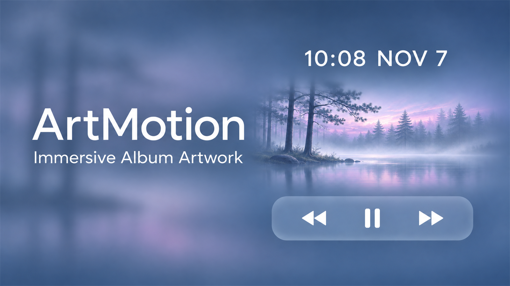
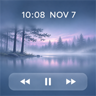

Developers
- ChatGPT6.1
- JaySuen


ArtMotion brings immersive album artwork to Music and the Lock Screen on iPhone and iPad.
Include your device, OS and jailbreak environment, ArtMotion version, reproduction steps, and a screenshot or crash log. In the Coolapk app, search for JAYSuen to send a private message, or search for ArtMotion and comment on the latest post.
Open CoolapkThanks to ArtFull and its author Ethan Whited (ETHN / nahtedetihw) for their album-artwork design and open-source work.
Every package supports both OS families. For arm64 devices; arm64e devices should install ArtMotion.
Tested on an iOS 16.5 Rootless iPhone 14 Pro and an iPadOS 17.0 RootHide iPad. Other device and OS combinations have not been individually tested. Animated artwork depends on available Apple Music resources and system animation settings; static artwork is used when no animated resource is available.
First public beta release.